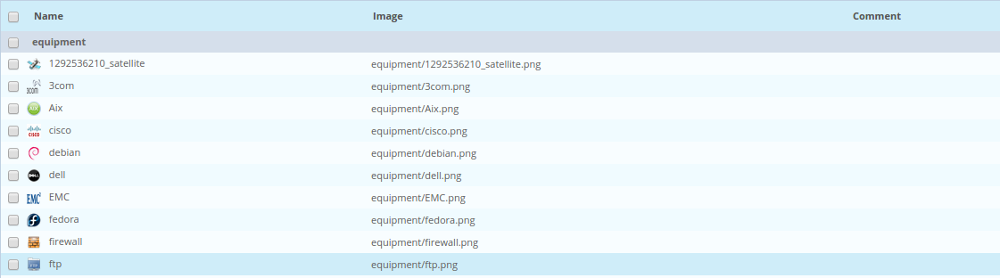
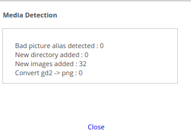

Medias¶
Medias are images used by the Centreon web interface. These images are used to represent the monitored resource in a more intuitive way, propose backgrounds for cartography modules, etc.
Image management¶
All the images are stored in the folder entitled: /usr/share/centreon/www/img/media of the Centreon server.
There are two methods for adding images to this folder:
- Do it manually
- Use automatic synchronisation: this method has the advantage of being able to import multiple images at the same time.
Manual addition¶
To add an image in Centreon:
- Go into the menu: Administration ==> Parameters ==> Media
- Click on Add
The following window is displayed:
- Existing or new directory field can be used to add a new folder in the image folder or to choose an existing folder into which the image can be copied
- Image or archive field can be used to select the image or the set of images contained in an archive which will be imported
- Comments field can be used to describe the image
Synchronising the images¶
To synchronise one or more images in the Centreon medias:
- Copy your images in the image folder (the images may be situated in folders)
- Make sure that the user who executes your web server has the read rights on these images
- Go into the menu: Administration ==> Options ==> Media
- Click on Synchronize Media Directory
The following window imports the new images:
